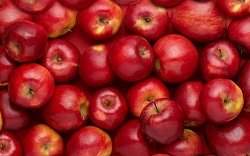
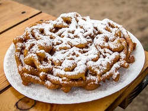

Shopping
Family Fun and Enterntainment
Music
Food and Drink
With over 100 vendors present at AppleFest, there are many options of food that both young children and their parents will enjoy. This makes it convenient for these families to enjoy a meal at AppleFest, or to just sample or purchase some snacks. Here we have some of the most popular foods at AppleFest listed. Many other foods not listed here will be sold as well. This is just a brief overview.Ethnic Food vendors
Taste of Thai
Thai food. Vegetarian, Vegan, and gluten free options available.
Tibetan Momo Bar
Japanese and Tibetan food. Dumplings, potatoes, vegatables, noodles, and stir fry
Sahara Meditteranean
Salad, Meat, Hummus, Falafel, and more.
Sangam Indian Curry
Rice, lentils, naan bread, and more.
Viva! Taqueria
Mexican food featuring tacos, burritos, quesadillas, enchiladas, soups and salads, and more.
Casablanca Pizzeria
Offers pizza, wings, subs, pastas, salads, panini, wraps, sandwiches, pitas, burgers, calzones, chicken, etc.
Apple Themed foods and Baked Goods
Apples
Locally grown Ithaca apples are sold at several booths
Apple Cider
Enjoy either hot or cold. Will be sold at several booths
Apple Cider Donuts
Caramel Apples
Apples with caramel sauce (and other toppings)
Pumpkin cookies, cupcakes, and muffins

Other foods
Funnel CakeCotton Candy
Fried dough
French Fries
Sweet Potato Fries
Sandwiches
Kettle Corn
Popcorn
